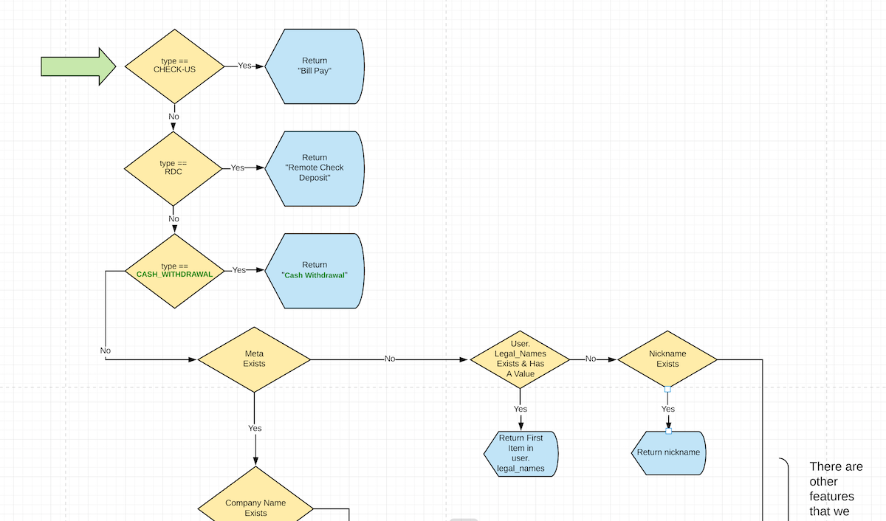

work
INTRO:
Hi, I'm Damon Bauer. I'm a developer on the Gazelle Debit Card team. I've been at Ramsey Solutions for 5 1/2 years. I started working on daveramsey.com, then moved to EveryDollar where I worked on the browser app, which is written in React.
This is a talk about how I do work. Most of these ideas are not mine, but I've learned them over my time here.
There's a good chance you've heard of, or even practice, a lot of what I'm going to talk about. My hope is that everyone can find at least _something_ to try and improve our code, processes and end products.
One thing you'll probably notice as I speak is that this talk has almost nothing to do with the actual code you write. Rather, it has much more to do with how you communicate, think about problems, and find solutions that serve your team, the business, and ultimately the users of your code.
A core value of the Front End Chapter is to: "ship value first & early, and talk to our customers". I think this means that we find ways to get something out to users, even if it's not complete or not perfectly polished, then we find ways to make it better.
Keep that in mind as we go through this talk. With that, let's get started.
part 1: plan
How do we break this work down?
ruthlessly cut scope
part 1: plan
Alongside designers and product managers, we can ask these questions:
* what can we agree on that is the smallest piece of work that still accomplishes the feature?
* what can we _not_ ship?
* what can we get away with _not_ doing?
Designers push the boundaries of our UI's. They challenge our assumptions, they question why something is technically not possible. This is a good thing! This is our chance to challege them about what's imperative to keep vs. what's a "nice to have". It's not a fight or a power struggle; it's an exercise in give and take and building trust.
provide
some user value
part 1: plan: ruthlessly cut scope
Once you've cut scope, we need to ensure these 3 things are true with that smallest piece of work.
First, and the most important, is to ensure this new piece of work still provides user value. It's not serving the customer or the business if features we ship don't make it clear & easy for the user to do something.
If the user can still perform the task they need, we're on the right track. Now it becomes a discussion with the rest of the team to ensure what will be delivered is an acceptable first iteration.


part 1: plan: ruthlessly cut scope
Let's look at a real example from Gazelle. Here are 2 screenshots from a "transfer funds" feature we built. The goal was to enable a user to transfer funds from a connected bank account into their Gazelle account. On the left was the mockup, on the right was what we delivered as a _3rd_ iteration.
Things we cut included: bank icons, custom select box, account balances & numbers, to/from toggle, scheduling the transfer, withdraw & deposit estimates.
This was around 4 months ago... and we're still using what's on the right.
We cared more about users getting money into Gazelle so they could use their card (and we make money) than to delay that work adding all those extra things. It's our goal to make Gazelle worthy of someone's _primary_ bank account, which means they should be setting up direct deposit into Gazelle. Ultimately, that means this transfer funds feature will become less and less relvant. We're thinking long term and not putting work into something that we hope won't be used much.
don't box yourself in
part 1: plan: ruthlessly cut scope
The second thing we need to ensure when cutting scope is that we don't box ourselves in. The small piece of work should help build a foundation for us to iterate quickly.
Our very first iteration of the transfer funds feature was a page that had a single button on it that said "Transfer $25". That's it. You could transfer $25 into Gazelle.
This didn't box us in because we were able to build all the code behind the scenes to accept an account to transfer from, an account to transfer to, an amount, form validation and API calls. We were able to both ship _something_ and build the back end functionality we'd need no matter what the interface is.
That leads me to the last point - ship quickly & learn.
learn
part 1: plan: ruthlessly cut scope
The point of this exercise is to ship as fast as we can, so we can begin learning how real people interact with our products in real environments.
You may have been here a few weeks ago when Ensor talked about "feedback loops". This is one example of a feedback loop in action. When we learn how our users interact with our software, we can tighten this feedback loop & make the software better. Then the process continues.
This isn't limited to just "did a user like this feature" either.
For instance... honestly, it's embarrassing how many times I've been bitten by a CloudFront configuration not forwarding query parameters, or not accepting cookies.
If we ship something out to production quickly, we are able to find those things that much faster. It rules out a lot of "potential" problems, making it easier to find that my cookies aren't being whitelisted.
before code
part 1: plan
Now that we have an understanding about how we're trying to go about building things, let's talk about actually building it. Before we even write code, though, we can flex our software "design" muscle. That's what we'll focus on for the next few minutes.
Let me say this from the top: Pull Requests should be the manifestation of all the planning your team has gone through & agreed to _before_ touching code.
Let's talk about why.
early feedback
part 1: plan: before code
When we gather around a whiteboard, pair or even group up, we're able to use the team as a sounding board to discuss ideas, tradeoffs and work through logic decisions.
We have a saying here, "If you want to go fast, work alone. If you want to go far, work together." This is never more true than applying it to this idea. When we plan how to solve a problem _together_, we inevitably end up with a better solution. We're able to bounce ideas off one another, think of different edge cases and talk through different patterns. We can avoid a lot of bugs & rework simply by talking through what we think we need to build before we actually do it.
share context
part 1: plan: before code
This idea piggybacks off the last. If we're working as a group to solve a problem, we all get context and learn a little more about how our systems work.
Think of just some of the reasons why we might be out of the office or even away from your desk. Sick time, vacation, DMV, meetings... there are plenty of times where a teammate could pick up where we left off. This is why planning the work with our team is crucial. Everyone should have a decent understanding of what we're building and a pretty solidified idea on how.
avoid rework
part 1: plan: before code
If I make a big PR and I'm the only one with the context of how and why it works, and that PR has some concept baked in that is "wrong", it's very difficult to change, especially if it's all throughout the PR.
What I'm proposing, however, is that our team has agreed on how to build something, we should all have the context of what we're building, and we'll be making very small PRs.
These 3 facts make it trivial for a teammate to call out a "wrong" concept early on in the process so it's easier for us to fix it before it is proliferated throughout the code.
artifacts
OK, so we've got an idea of _how_ we want to work, and we know _why_ it's valuable. How do we _actually_ do this?
The big outcome of this "pre-work" are design artifacts. Design artifacts are anything you or your team puts together that helps us visualize the work and organize our thoughts.
is/is not
part 1: plan: artifacts
One of the clearest, most succinct ways I've found to communicate our intentions as developers is to create an is/is not table.

part 1: plan: artifacts: is/is not
Here's an example. These tables are intended to provide a high level overview about the scope upcoming work.
It helps the author decide what to include - and just as important - what to exclude, by focusing attention by providing distinct boundaries.

part 1: plan: artifacts: is/is not
is/is not tables are meant to be very scannable & consumable. The're not exhaustive or detailed.
diagrams
part 1: plan: artifacts
In Zach Olsen's training class about documentation, he mentions "favor images over bullets over paragraphs".
Diagrams are great way to visualize different parts of a system, user flow through a feature, how to trace code through different areas of the codebase and high level application pieces. There are many more uses for diagrams, so explore & try using them.

part 1: plan: artifacts: diagrams
This is a very high level overview of tracing the code & server responses for when a user logs into Gazelle. This is intended for someone who is not actively in the project to know "what happens when a user logs in?"

part 1: plan: artifacts: diagrams
This is a diagram mainly aimed at stakeholders, to describe the "actors" in Gazelle.

part 1: plan: artifacts: diagrams
Finally, here's a diagram to decide what "name" to display for a transaction based on the JSON response from our API.
Once we've diagramed the "what", it becomes much easier to write code because it's we've already determined what needs done & how we plan to do it. It becomes a matter of implementing the logic we've already thought through in the diagram. We're not having to simultaneously figure out "what" we're solving and find an elegant coding pattern to figure out the "how".
design docs
part 1: plan: artifacts
One of my favorite artifacts to make is what we call a "design document". I like to think of this as the "master document" that captures all of the other things our team has put together.

part 1: plan: artifacts: design docs
I build design documents that aim to explain the "what", combine documentation sources & list proposed subtasks.
By reading this document, anyone on our teams should be able to understand what will be worked on & how we plan to approach implementing it.
It's also a great reference for yourself as you build the feature. Because the work has already been planned out, now it's just about executing. In my experience, it's much easier to jump back into writing the code after a context switch, lunch, meetings, or the start of a new day because I have all the context of what I'm building right here.
part 2: execute
Now, we move on to part 2, execute. We've talked about _how_ we want to approach our work and about _why_ we approach it that way. Let's talk about _doing_ the work and the benefits.
deliver
something
part 2: execute
The first benefit of this type of process is that we are able deliver _something_, no matter how small.
The whole point of this workflow is aimed at shipping some part of a feature before it's polished or complete.
low commitment
part 2: execute: why
By working like this, we're OK with the fact the code we're writing has a very good chance of being deleted, or at least being re-written almost completely. We need to hold our code with open hands, because at the end of the day what matters is that the code provides for a user's need.
By shipping small pieces of work, we're able to decide whether to keep going on that feature based on user feedback. If our user's tell us that the feature isn't right, we haven't lost weeks/months of work.
feedback
part 2: execute: why
Again, we get feedback early & often from our users. This can be directly from them in the form of surveys, calls or user tests. Or it can be indirectly, in the form of analytics, engagement or business metrics.
Again, think feedback loops here!
metrics
part 2: execute: why
Speaking of business metrics... one unexpected benefit of working like this - cutting scope, breaking down work into small chunks, planning ahead to avoid rework - that we found on the Gazelle team: our product manager is able to predict our work rate more accurately. She can then take information to stakeholders and our business can make an informed decision on what to build next.
This is a fantastic place for us to display our willingness and ability to "Partner" with our business with solid "Communication", 2 of the 4 "soft skills" on the IM+IN roadmap.
how
part 2: execute
Now I want to talk _practically_ about how we can work like this on a daily basis and be successful as a team.
tickets as user value
part 2: execute: how
This idea will probably sound foreign to you. It will probably also sound like a terrible idea. But trust me, it works.
First: Jira tickets don't exist just for you as a developer. Instead, they exist for stakeholders to know _what_ we're working on. They should be written so that as they move across the board, user value is being delivered and everyone knows what that value is.
On Gazelle, we make a parent ticket that describes the feature that has all the acceptance criteria, testing notes & user stories. Then, we make _subtasks_ that we'll use to track our work. Think of this parent ticket like an "epic".
It's common for a ticket to have 10-15, sometimes 20, subtasks, especially if it's a brand new feature.


part 2: execute: how
Towards the end of last year, Brendan introduced this idea of "concurrency". Working like this _forces_ concurrency. It enables us to say "we know we need an API, so what should it return?"
We can agree on the API response, and start building a UI with dummy data that we know we'll get back from the API.
At the same time, the API can be built & be hardcoded to return dummy data.
While that dummy data is being returned, the we can build code to call that API and get that same dummy data back that we first built the UI with.
Then, once the API is functional, it's a simple "verification" that our UI is still working as expected.
small PRs
part 2: execute: how
The other component to breaking the work down to lots of subtasks is making small PRs. I aim for around 300 lines of code changed. Any more than that, I start to question if there's too many unrelated concepts going on.
This is very important: 1 Jira ticket does not mean 1 PR. We can have multiple PRs against a ticket. In fact, it probably means we're breaking the work down well & focusing on one thing well.
small PRs - why?
part 2: execute: how: small PRs
Why are small PRs a good idea?
faster & more thorough reviews
part 2: execute: how: small PRs - why?
When we have small, focused PRs, we are able to receive a review faster and the reviewer can more intentional with their feedback, since there should only be a small handful of concepts.
easier to understand
part 2: execute: how: small PRs - why?
As a reviewer, a small, focused PR helps us understand both the changes in the PR AND how the changes fit into the larger system.
easier to course correct
part 2: execute: how: small PRs - why?
This goes hand in hand with what I talked earlier about avoiding rework.
A small PR makes it easy to find and call out a bad concept early on in the process so it's easier for us to fix it before it is proliferated throughout the code.
fewer bugs & merge conflicts
part 2: execute: how: small PRs - why?
When we focus on building a PR with a narrow focus, the reviewer can hone in on specific concepts, patterns and logic. It makes the likelhood of finding a bug much higher, leading to more a more bug-free codebase.
Small PRs also help reduce merge conflicts because the number of files changed in a PR is likely lower and the changes are more contained.
share code earlier
part 2: execute: how: small PRs - why?
If our teams are dividing and conquering the subtask list, there's a good chance a piece of work needs done first to unlock another piece of work to be worked on.
Shipping a small PR means that a dependent piece of code is available quicker, enabling that concurrent work to happen.
small PRs - how?
part 2: execute: how: small PRs
Of course, we want to author & merge these PRs quickly, so we can't block the runway while the rest of the feature is built. Let's talk about a few ways we can continually ship these small PRs.
hidden URL
part 2: execute: how: small PRs - how?
We could add a new, hidden URL to the project and develop the feature there. As long as it's never linked there, it should be fine to go all the way to production with no fear of breaking the project.
hidden UI
part 2: execute: how: small PRs - how?
This could be a hidden div if it's just a visual change. Or, to initiate a new feature, we could hide an element behind a certain button click or a gesture like a triple click on something.
feature flags
part 2: execute: how: small PRs - how?
Wrapping code at the highest level in a feature flag is a great way to hide it until the flag is "turned on". We can use something like Optimzely Rollouts, or something custom. Jason York is a good resource to talk about what's available around the company for feature flags.
In Gazlle, we wrap code in feature flags all the time. Let's say we have an element that is rendered if the "foo" flag is active. Using a query parameter in the URL, we can visit a page with that query param and that wrapped code will become visible so we can test it.
-
plan
- ruthlessly cut scope
- leave artifacts
-
execute
- tickets as user value
- small PRs
Let's recap. As I said at the beginning of this talk, a core value of the front end chapter is to "ship value first & early, and talk to our customers".
I believe that when we:
- ruthlessly cut scope
- leave lots of design artifacts
- author tickets that are user value driven, and
- constantly ship code using small PRs,
we are able to ship code to our customers faster, get feedback earlier, and deliver hope to people who need it most.
Hopefully, you learned something new during this talk... what's one or two things you might want to try or implement? What piqued your interest? I'd be happy to chat with you if you want more info, bounce ideas or ask questions!
Thanks!